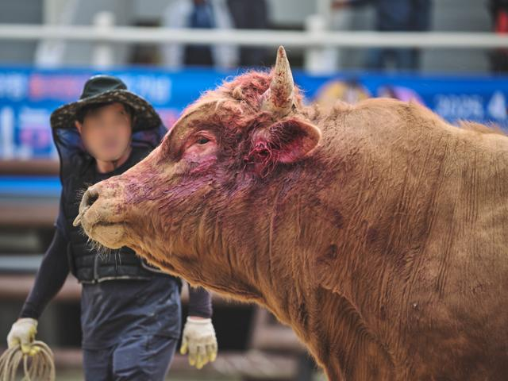
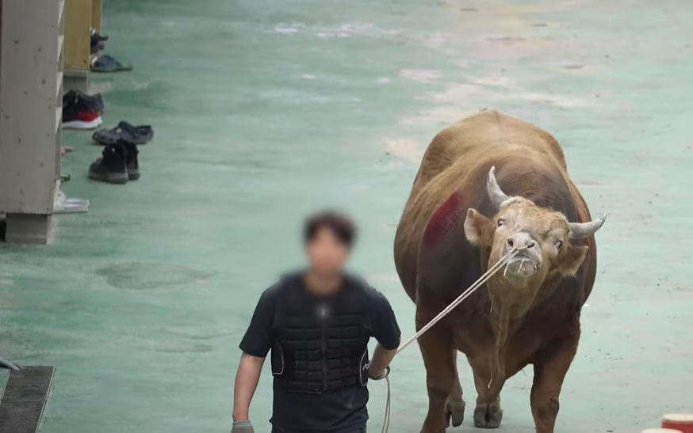
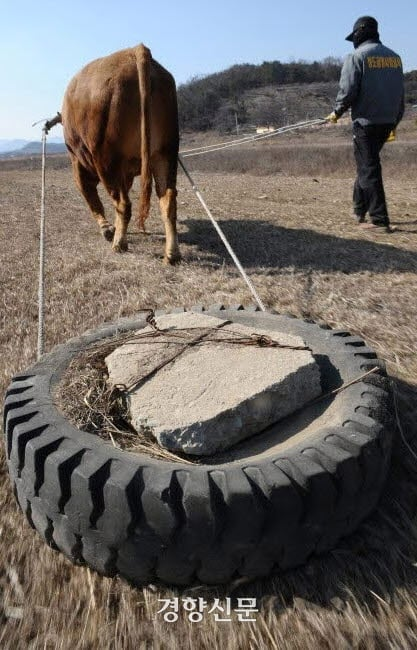
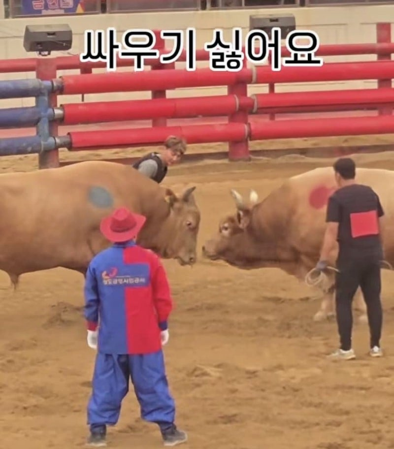
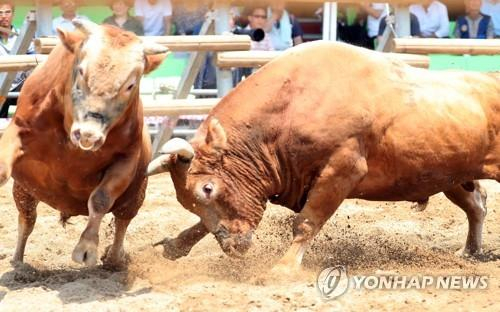
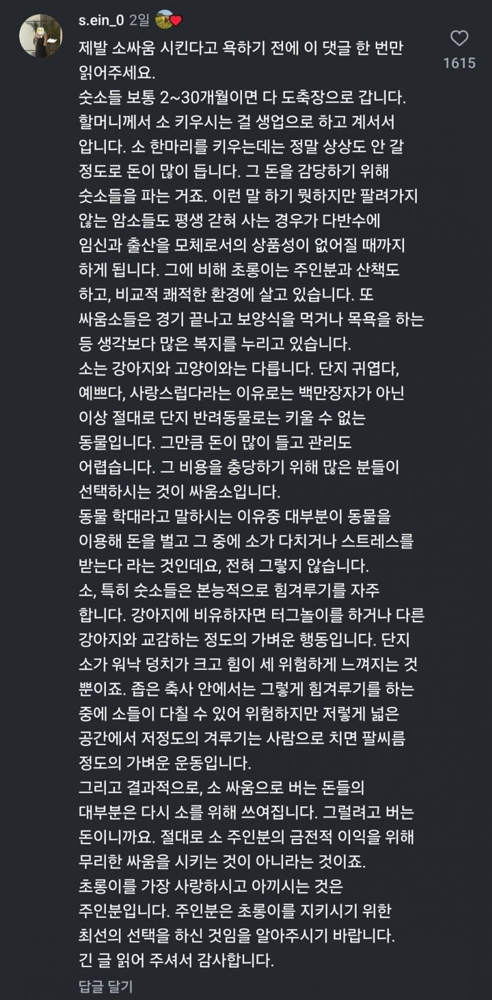

소싸움 반대 측

"일단 피터지게 싸우는 건데 소가 아프지 않겠느냐"

"경기장에 강제로 끌려가는 경우가 있지 않느냐"

"훈련을 과연 원해서 하는 것이냐"
등등 소싸움이라는 "문화"로 인해 소가 입는 직접적인 "피해"에 주목함
소싸움 찬성 측

"소가 싸우기 싫어서 피하면 그 자리에서 경기는 종료된다"

"수소들의 본능을 어느 정도 이용하는 거라 완전한 강제는 아니다"

"소싸움 멈추면 소들은 100% 고기가 되지 않느냐"
축산업 자체가 종말하지 않는 한 오히려 소에겐 나은 삶이라는 "축산업 존재의 불가피성과 제도 순응"에 주목함
결국 논쟁이 평행선을 달리게 됨
-애초에 육식과 축산업이 잘못됐다 주장하는 비건
-영세한 산업 규모 때문에 소들이 수송 및 육성 단계에서 험하게 다뤄지는 상황을 지적하는 사람들
-그냥 사람이고 소고 간에 링 안의 겨루기 폭력조차 싫은 강경 비폭력주의자들
-비참하게 사는 것보다 안 태어나는 게 낫다는 반출생주의자들
등등까지 끼면 토론장이 개판이 된다
소싸움 안봐서 그럼
진짜 존나 얄밉고 밉상인 염소나 양처럼 박치기 하는게 아니고
소는 웅장한 힘겨루기임. 둘이 딱 붙이고 힘겨루기함
첫번째 사진은 존나 악랄한게
계속 싸우다보면 피날수도있는데 저정도면 UFC 선수들 피흘리는 양이 더 많겠다
손가락으로 핑프할 시간에 쇼츠에 청도 소싸움만 쳐봐도 알 수 있음